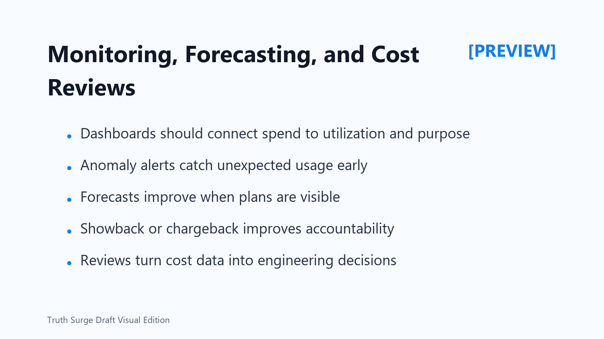

Monitoring, Forecasting, and Cost Reviews
Connecting to LMS... Progress: in progress

Narration
GPU cost controls need ongoing operation. A useful dashboard connects spend to workload purpose, owner, environment, utilization, job success rate, failure rate, idle time, queue time, and trend. Spend alone says what happened. Spend with context helps explain why.
Anomaly alerts help catch unexpected usage early. A forgotten notebook, runaway retry loop, sudden inference traffic change, failed cleanup, or unusual data transfer pattern should be visible before it becomes a major budget problem. Alerts should route to owners who can act.
Forecasting is more useful when it includes planned work. Experiments, launches, evaluations, seasonal traffic, model refreshes, and migration projects can all change GPU demand. Forecasts should combine historical spend with known upcoming events.
Showback or chargeback can improve accountability when used constructively. The goal is not to shame teams. The goal is to help teams understand the cost of their choices and compare spend against business value.
Regular cost reviews turn data into decisions. A review may lead to resizing, rescheduling, cleanup, caching, model optimization, policy changes, or retiring a workload. The best reviews produce concrete engineering actions, not just reports.
Reviews are most effective when they include both finance context and engineering context. The cost chart shows where money went. The engineering discussion explains whether that spend created value and what should change next. A recurring review also helps teams notice patterns, such as repeated failed jobs, unused datasets, or inference capacity that no longer matches demand.